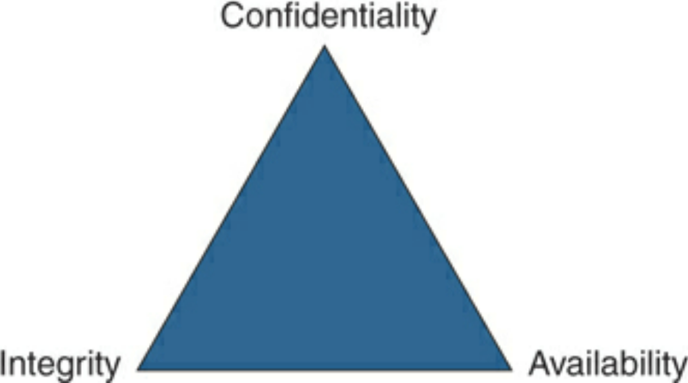
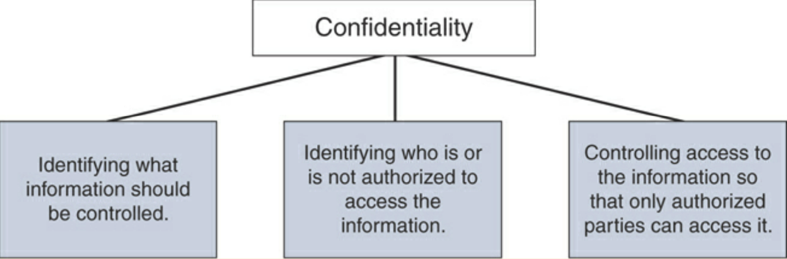
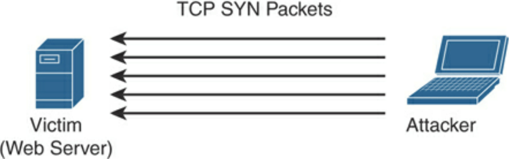
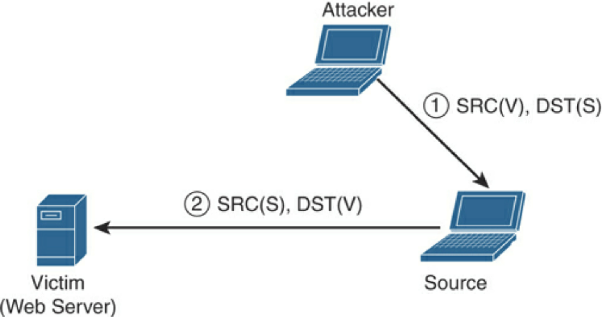

CIA
All three components in the triad are equally important.
Confidentiality
Confidentiality is the requirement that private or confidential information not be disclosed to unauthorised individuals. ISO 27001 definition: “the property that information is not made available or disclosed to unauthorized individuals, entities, or processes.”
Most common method is encryption (i.e. VPNs, TLS, etc.)
Data must be controlled, audited, and monitored by encrypting immobile data. Data is protected by law, regulation, memorandum of agreements, contractual obligations, management discretions. Examples:
Nonpupblic Personal Information (NPPI)
Personally Identifiable Information (PII) (ID, drivers, bank acc., etc.)
Payment Card Information (PCI) (credit/debit card)
Criminal records
Patient and health records, Personal Health Information (PHI)
Trade secrets
Source code
Military secrets
Security mechanisms to preserve confidentiality:
Logical and physical access controls
Encryption (in motion and at rest)
Database views
Controlled traffic routing
Having good data classification methods enhances the way data is secured.
Integrity
Integrity is the ability to ensure systems and data have not been altered or compromised and that data is an accurate and unchanged representation of the original secured data. Integrity compromises often affect confidentiality.
Data integrity means that programs are changed in an authorised manner.
System integrity means that systems perform their intended functions.
Threats to integrity:
Errors and omissions. A programmer can make a mistake (bugs) that break systems.
Malware can corrupt system files.
Access to places where one should be unauthorised.
Availability
Systems, applications, and data must be available to authorised users when requested or required.
Threats to availability:
DoS attacks
System downtime
Human error
Preserving availibility:
SLAs, continuity planning, and incident response
Access controls & environment controls
Monitoring
Data redundancy & Resilient systems
Virtualisation, clustering, etc.
Denial-of-Service Attack
A Denial of Service (DoS) attack involves 1 system and 1 network connection to perform denial-of-service against a system, network, or resource.
A Distributed Denial of Service (DDoS) attack involves multiple systems and network connections that can be geographically distributed to perform denial-of-service against the victim.
Direct DDoS
Source of attack generates packets and sent directly to victim, AKA SYN flood attack.
Reflected DDoS
Sources of attack are sent spoofed packets that appear to be from the victim and the sources unknowingly become participants in the attacks by sending responses back to victim. UDP is used as it is easily spoofed (no handshakes).
Below image shows example (could be NTP), where A is the attacker, S is the source, and V is the victim.
Amplification DDoS
A reflective DDoS, where packet size is increased. For example, DNS queries are sent and responses are much bigger in packet size.
Exploitation DDoS
Vulnerabilities, such as buffer overflows cause server or network infrastructure to crash. Botnets (collection of compromised machines) controlled from command-and-control (C2/CnC) can be used in DDoS, spam emails, etc.
Access Control Management
Access Control is a security feature that governs how people and processes interact with systems & resources to ensure that authorised people/processes can access information/resources, while unauthorised people/processes cannot.
Access Control Models are the active entity (subjects) that requests the access to the data (objects) and the passive entity being accessed by the object.
Least privileges, the better (minimal level of access required to do job), Two Approaches to Security Posture:
Open: default allow
Secure: default deny
Gaining Access:
Identification - the subject supplies an identifier (username) to the object.
Authentication - the subject supplies verifiable credentials to the object.
Authorisation - assigning authenticated subjects with the correct permissions need to operate.
Authentication Credential (factors) Categories:
Knowledge (something the user knows)
Possession (something the user has)
Inherence (something the user is)
Levels of authentication (requires data classification, regulations, impact analysis, threat analysis when deciding level to be used):
Single-factor is when 1 factor (such as password) is presented.
Multifactor Authentication is when multiple factors are presented.
Multilayer authentication is when more of the same type of factor is presented.
Out-of-band authentication requires communication over a channel that is distinct from the first factor.
Types of Authorisation (how subjects access objects):
Mandatory Access Controls (MACs) - policies and cannot be modified by owner.
Discretionary Access Controls (DACs) - policies defined by owner.
Role-Based Access Control (RBACs / nondiscretionary) - policies based on role or function.